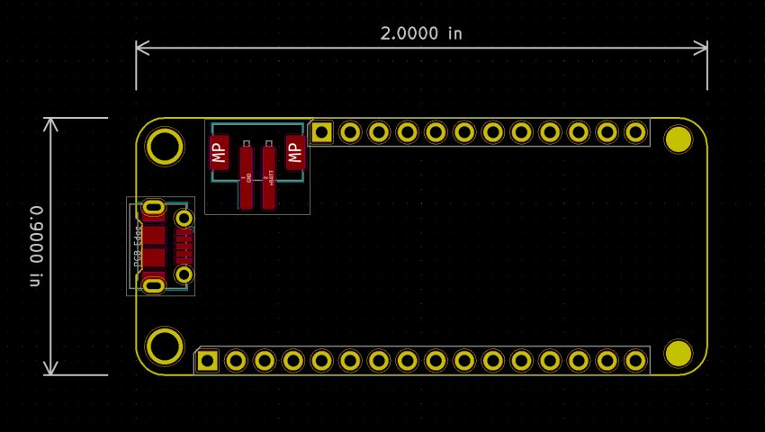

This project template was created based on the Adafruit Feather Specification.
This template should be enough to get you started desigining your own Feather board.
It includes the outline, holes, headers, the usb and battery connectors.
The board outline looks like the following:

This project is open source.
(c) 2019 arturo182